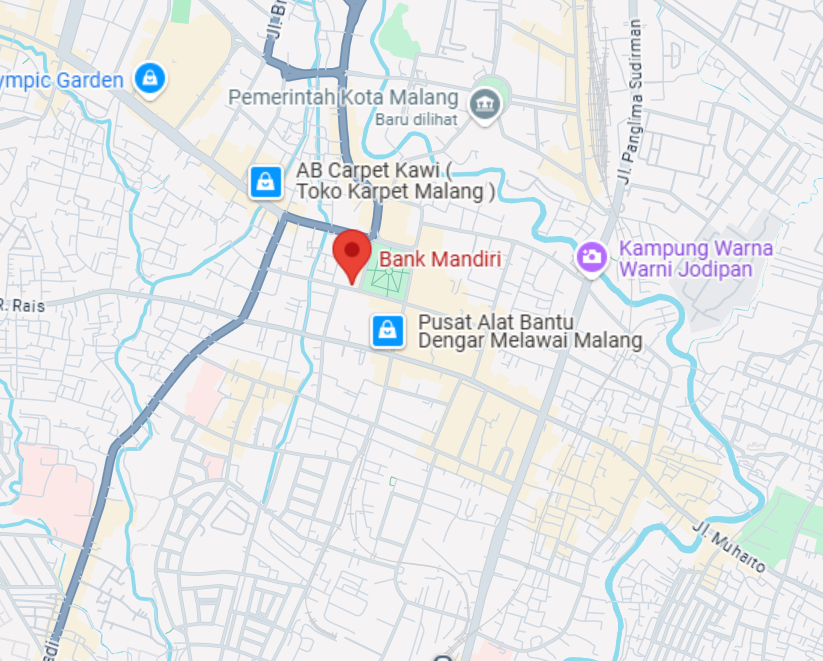
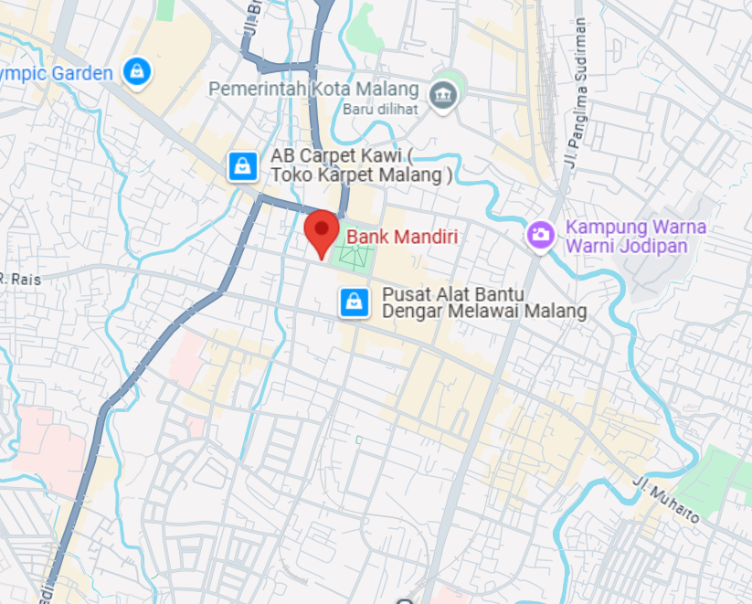

Bangunan Bersejarah Malang
Balai Kota Malang
Balai Kota Malang adalah salah satu bangunan peninggalan pemerintah kolonial Hindia Belanda.
 

Bank Mandiri Merdeka
Berlokasi di Jl. Merdeka Barat No.1, Kota Malang.
Klenteng Eng An Kiong
Kelenteng yang berada di Jl. R.E. Martadinata No. 1.
Ijen Boulevard
Dibangun di era hindia Belanda, Jalan Ijen.
Candi Singosari
Candi Singosari merupakan candi Hindu-Buddha.
Candi Badut
Diperkirakan dibangun pada 760 M, oleh karena itu dianggap sebagai yang tertua di Jawa Timur.
Hotel Niagara
Desainnya khusus dirancang oleh arsitek asal Brazil, Fritz Joseph Pinedo pada tahun 1900-an.
Gereja Hati Kudus Yesus
Gereja ini terkenal akan kemegahan arsitektur Neo-Gotiknya.
Stadsklok
Stadsklok adalah menara jam peninggalan Belanda yang terletak di Jl. Basuki Rahmat, Kota Malang.